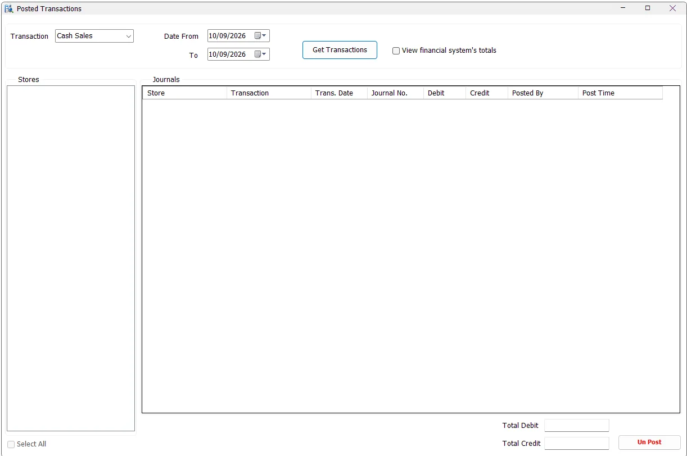

Posted Transactions
Posted Transactions is the audit/reconciliation view for financial journals that were already posted from the central Sales/COGS/Stock Transfer posting workflow. It shows the IMS journal totals, Journal No., posting user/time, can compare those totals with the current financial system, and provides controlled UnPost functionality.

Choose the posted transaction family
Select a date range and one of the supported transaction families:
| Transaction | Includes |
|---|---|
| Cash Sales | Posted Cash Sales and Cash Returns. |
| Credit Sales | Posted Credit Sales and Credit Returns. |
| Cost Of Cash Sales | Posted COGS entries associated with Cash Sales/Returns. |
| Cost Of Credit Sales | Posted COGS entries associated with Credit Sales/Returns. |
| Stock Transfers | Posted Stock Transfer inventory-value journals. |
Get Transactions and select stores
Click Get Transactions. IMS finds stores that contain posted journals matching the transaction type and date criteria. Select the required stores or use Select All; the journal grid refreshes for the selected store set.
Journal information
| Column | Meaning |
|---|---|
| Store | The IMS store/center associated with the posted journal. |
| Transaction | The posted journal family such as Cash Sales, Cash Returns, Credit Sales, COGS or Stock Transfers. |
| Trans. Date | The transaction/journal date represented by the posted record. |
| Journal No. | The financial-system journal/reference number stored back in IMS after posting. |
| Debit / Credit | Totals calculated from the IMS prepared journal records. |
| Posted By | IMS user who performed the posting. |
| Post Time | Date/time when IMS recorded the posting. |
The bottom of the screen shows the Total Debit and Total Credit for the current result.
View financial system's totals
Enable View financial system's totals to perform a direct reconciliation check against the current financial system. IMS queries the Al-Shamel journal-detail records using the accounting branch, journal number and posting/reset type, then displays the financial-system Debit and Credit totals beside the IMS totals.
This makes the screen useful for confirming that the journal recorded as posted by IMS still exists in Al-Shamel with the expected totals.
UnPost
UnPost is a controlled correction action. Select exactly one journal row and click UnPost. IMS requires Financial Posting permission, verifies that the transaction date is still in an open financial period, confirms the financial-system connection and asks the user to confirm removal.
After confirmation, the current implementation removes the journal header/details from Al-Shamel, clears the corresponding Journal No./posting metadata in IMS and writes an audit-log entry describing the unposted store, journal and accounting branch.
Interrupted or uncertain UnPost
The financial-system deletion, IMS acknowledgement and audit-log entry are separate steps. If UnPost is interrupted, keep the journal number, posting type, branch/store and error details. Before retrying, have an authorized finance administrator compare the financial journal with IMS posting status. A missing acknowledgement does not prove that deletion failed.
Typical reconciliation workflow
- Select the transaction family and date range.
- Click Get Transactions.
- Select the required stores.
- Review Journal No., IMS Debit/Credit and posting user/time.
- Enable View financial system's totals when an Al-Shamel comparison is required.
- Investigate any mismatch before using UnPost or reposting.